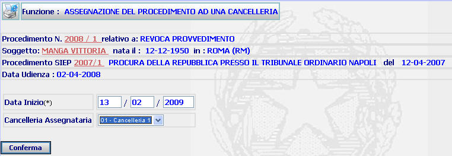

ASSEGNAZIONE DEL PROCEDIMENTO AD UNA CANCELLERIA: La funzione consente di assegnare un procedimento (che ne sia privo) ad una Cancelleria (inserita sul sistema dall'Amministratore di ufficio attraverso la funzione inserimento cancelleria assegnataria) o di inserirne una diversa rispetto a quella precedentemente assegnata.
LE MASCHERE VIDEO
La funzione viene realizzata attraverso le maschere seguenti in cui compare il dettaglio del procedimento e si dà la possibilità di assegnare una cancelleria al procedimento o di cancellarne una precedentemente assegnata.

COME FARE PER ...
| Per visualizzare il dettaglio del procedimento Sius l'utente deve cliccare sul link relativo all'Anno/Numero del procedimento Sius evidenziato in rosso; |

| Per visualizzare il dettaglio del soggetto l'utente deve cliccare sul link relativo al cognome/nome del soggetto evidenziato in rosso; |

| Per visualizzare il dettaglio del procedimento Siep l'utente deve cliccare sul link relativo all' Anno/Numero del procedimento Siep evidenziato in rosso; |

| Per assegnare al procedimento una cancelleria (o inserirne una nuova rispetto a quella precedentemente assegnata), l'utente deve |
1. Indicare la data in cui l'assegnazione è stata effettuata
2. Selezionare attraverso l'apposita tendina la Cancelleria da assegnare al procedimento
3. Selezionare il bottone

CAMPI
I campi da compilare sono i seguenti:
| Data inizio | Campo (obbligatorio) nel quale va indicata la data di assegnazione del procedimento ad una Cancelleria |
| Cancelleria Assegnataria | Campo nel quale va inserita, attraverso l'apposita tendina, la Cancelleria ala quale è stato assegnato il procedimento |
PULSANTI
E' presente il seguente pulsante facente parte del gruppo di pulsanti di "Uso Comune:
|
PULSANTE |
DESCRIZIONE |
|
|
Questo pulsante ha lo
scopo di stampare il contesto (videata) |
BOTTONI
Oltre ai comandi funzionali relativi al menù verticale è presente il seguente bottone:
|
COMANDI |
DESCRIZIONE |
|
|
A fronte di tale comando, il sistema dopo aver verificato la validità dei dati specificati, presenta la maschera Cancellerie assegnatarie associate al procedimento |